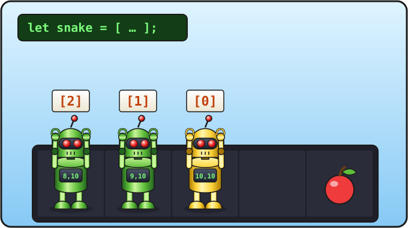

Урок 7 из 16 ⏱ 50 минут
Массивы и объекты
Пока змейка нарисована тремя отдельными командами. Но она будет ползти и расти, и компьютер должен помнить, где лежит каждый её кусочек. Для этого есть объекты и массивы.
- опишешь яблоко объектом
{ x: 15, y: 10 }; - опишешь змейку массивом — списком кусочков;
- нарисуешь всю змейку циклом;
- напишешь функцию
draw, которая рисует всю игру.
| 10 мин | Объекты: яблоко |
| 15 мин | Массивы: списки и номера с нуля |
| 15 мин | Змейка — массив объектов, функция draw |
| 10 мин | Управляем змейкой из консоли, задания |

[0] — голова.Объект — коробка с отделениями
У яблока есть два числа: x и y. Можно сделать две переменные appleX и appleY, но удобнее сложить их в одну коробку с отделениями. Такая коробка называется объект:
let apple = { x: 15, y: 10 };
Объект пишут в фигурных скобках. Внутри — свойства: имя, двоеточие, значение. Свойства разделяют запятой. Достать значение можно через точку:
console.log(apple.x); // 15 console.log(apple.y); // 10 apple.x = 3; // переложили яблоко
Такая точка уже встречалась: ctx.fillStyle, console.log. Это тоже объекты со свойствами!
Массив — список
Массив — это список, в котором значения стоят по порядку. Его пишут в квадратных скобках:
let colors = ["red", "green", "blue"]; console.log(colors[0]); // red console.log(colors[2]); // blue console.log(colors.length); // 3
- У каждого места в списке есть номер. Он называется индекс.
- Номера начинаются с нуля! Первый элемент —
colors[0], второй —colors[1]. colors.length— длина списка, то есть сколько в нём элементов.
colors[3] вернёт undefined («не определено»). Последний элемент всегда имеет номер length - 1.
Змейка — список кусочков
Каждый кусочек змейки — это клеточка с координатами x и y, то есть объект. А вся змейка — список таких объектов. Первым в списке (номер 0) всегда будет голова:
let snake = [
{ x: 10, y: 10 },
{ x: 9, y: 10 },
{ x: 8, y: 10 }
];
Как достать координаты головы? Сначала берём элемент списка, потом его свойство: snake[0].x — это 10, snake[2].x — 8.
Рисуем всю змейку циклом
Цикл пройдёт по всем кусочкам с номерами от 0 до snake.length - 1 и нарисует каждый:
for (let i = 0; i < snake.length; i++) {
drawCell(snake[i].x, snake[i].y, "lime");
}
Сколько бы кусочков ни было в змейке — 3 или 300, — этот цикл нарисует их все.
Функция draw
Соберём всё рисование в одну функцию draw («нарисовать»): очистить поле, нарисовать яблоко и змейку. Голову нарисуем жёлтой поверх зелёного кусочка, чтобы было видно, куда смотрит змейка. Перепиши скрипт так (зелёным отмечено новое, красным — то, что надо удалить):
let canvas = document.getElementById("game");
let ctx = canvas.getContext("2d");
let size = 20;
let cells = 20;
let snake = [
{ x: 10, y: 10 },
{ x: 9, y: 10 },
{ x: 8, y: 10 }
];
let apple = { x: 15, y: 10 };
function clearField() {
ctx.fillStyle = "black";
ctx.fillRect(0, 0, 400, 400);
}
function drawCell(x, y, color) {
ctx.fillStyle = color;
ctx.fillRect(x * size, y * size, size - 1, size - 1);
}
function draw() {
clearField();
drawCell(apple.x, apple.y, "red");
for (let i = 0; i < snake.length; i++) {
drawCell(snake[i].x, snake[i].y, "lime");
}
drawCell(snake[0].x, snake[0].y, "yellow");
}
clearField();
drawCell(10, 10, "lime");
drawCell(9, 10, "lime");
drawCell(8, 10, "lime");
drawCell(15, 10, "red");
draw();
Фокус с консолью
Переменные программы можно менять прямо из консоли! Открой её (F12) и введи по очереди, нажимая Enter после каждой строки:
snake.push({ x: 7, y: 10 });
draw();
Змейка стала длиннее! Команда push добавляет новый элемент в конец списка. Попробуй ещё:
snake.length apple.x = 2; draw();
Если обновить страницу (F5), всё вернётся как было: программа запустится заново с начала.
- Добавь в массив
snakeв коде ещё два кусочка, чтобы змейка была из пяти. - Сделай змейку, которая поворачивает: пусть хвост загибается вниз (например,
{ x: 8, y: 11 },{ x: 8, y: 12 }). - Что будет, если поменять местами первый и последний кусочки в массиве? Куда теперь «смотрит» голова?
- ⭐ Добавь второе яблоко: объект
apple2и строчку вdraw, которая его рисует.
snake к трём кусочкам, как в коде урока.
📄 Весь файл snake.html после этого урока
<!DOCTYPE html>
<html>
<head>
<meta charset="utf-8">
<title>Змейка</title>
</head>
<body>
<h1>Змейка</h1>
<canvas id="game" width="400" height="400"></canvas>
<script>
let canvas = document.getElementById("game");
let ctx = canvas.getContext("2d");
let size = 20;
let cells = 20;
let snake = [
{ x: 10, y: 10 },
{ x: 9, y: 10 },
{ x: 8, y: 10 }
];
let apple = { x: 15, y: 10 };
function clearField() {
ctx.fillStyle = "black";
ctx.fillRect(0, 0, 400, 400);
}
function drawCell(x, y, color) {
ctx.fillStyle = color;
ctx.fillRect(x * size, y * size, size - 1, size - 1);
}
function draw() {
clearField();
drawCell(apple.x, apple.y, "red");
for (let i = 0; i < snake.length; i++) {
drawCell(snake[i].x, snake[i].y, "lime");
}
drawCell(snake[0].x, snake[0].y, "yellow");
}
draw();
</script>
</body>
</html>
Проверь себя
- Я знаю, что объект пишут в
{ }, а массив — в[ ]. - Я помню, что номера в массиве начинаются с нуля, а голова змейки —
snake[0]. - Я понимаю, как цикл рисует змейку любой длины.